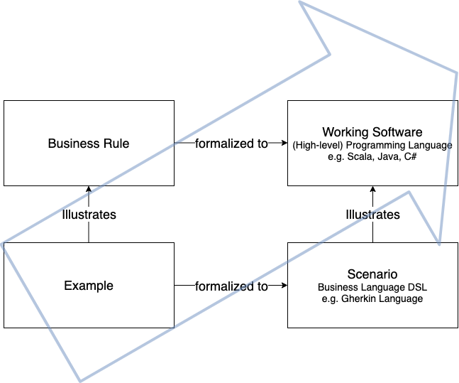

A brief essay on Behavior-Driven Development
2020-11-15
The ultimate goal for every agile process is to turn work into value in a sustainable way. In the context of software engineering, humans automate solutions to problems by explaining them in much detail to machines, that do not have a common sense. Thus, the machines can solve the automatable problems and humans can focus on the not automatable tasks: To further explain the right solutions to problems to a machine in the right way. This discipline is software engineering. The result of explaining the right solution to a machine the right way is good software. In all this there are (at least) two major problems:
Often communication between people is required before software can be built, because in many cases some people have the skills to explain a solution to a machine, and other people have a deep understanding of the solution itself. The classical approach to to solve this problem is called specification.
Sometimes people think that software works in a certain way but it doesn’t. While or after building software, some features might work at some point in time and then break without humans recognizing it. The software might stop (or even worse: not stop) in critical, unexpected moments which can cost, depending on the software, a lot of customers, money or even lifes. The common approach to solve this problem is called quality assurance and contains testing the software repeatedly.
The effects of these problems need to be discovered. In a waterfall-based approach the feedback cycle closes only after an increment went through specification, implementation and quality assurance, which means, that if any increment went off track, it is discovered at a late point in time.
The fundamental idea of BDD is to focus on the behavior of a software system while moving the solutions to the above mentioned problems, specification and quality assurance, closer together.(Nagy and Rose 2018, 3) Thereby, the feedback cycle shortens and off-track increments are harder to produce and less impactful. In this essay I want to elaborate on how BDD leverages this idea into building sustainable software, which principles and tools it uses to do so and to what extent it can be assumed that BDD works.
The annual “State of Agile” Report started 2007 and provides since then insights into the application of agile methodologies and practices over a large range of different companies worldwide. For the 14th State of Agile Report 1121 surveys were collected (“State of Agile 14th Report” 2020, 5) and for the Report from 2015 even 3880 surveys where collected(“State of Agile 10th Report” 2016, 2). The survey is handed out to agile practicioners and executives. It is aimed to be representative in terms of localization, company size and industries and it exists since more than 12 years, therefore it might contain a convincing insight into the employment of BDD, at least among the companies that participated in the survey. This table of percental BDD employment per year shows a significantly growing application of BDD, especially since 2015 BDD appears to gain relevance each year except 2019.(Nagy and Rose 2018, 9f)
| Report | BDD used by | BDD listed as |
|---|---|---|
| (“State of Agile 3rd Report” 2009) | 7% | agile method |
| (“State of Agile 4th Report” 2010) | None | agile technique |
| (“State of Agile 5th Report” 2011) | 9% | agile technique |
| (“State of Agile 6th Report” 2012) | 9% | agile technique |
| (“State of Agile 7th Report” 2013) | 10% | agile technique |
| (“State of Agile 8th Report” 2014) | 12% | agile technique |
| (“State of Agile 9th Report” 2015) | 9% | agile technique |
| (“State of Agile 10th Report” 2016) | 10% | agile technique |
| (“State of Agile 11th Report” 2017) | 16% | engineering practice |
| (“State of Agile 12th Report” 2018) | 17% | engineering practice |
| (“State of Agile 13th Report” 2019) | 22% | engineering practice |
| (“State of Agile 14th Report” 2020) | 19% | engineering practice |
[Table 1]
BDD is listed under different captions: In the earlier surveys it was listed as an agile method, then it was listed as an agile technique and since 2016 it is listed as engineering practice.
Dan North describes in “Introducing BDD” how BDD is his response to TDD. In order to get a deeper understanding of what that means, we must have a closer look at TDD. TDD is a narrower approach, in which mostly only technically focussed people are involved. The idea is to write a test that describes a feature which doesn’t exist yet, ensure it fails, and then implement that feature until the test does not fail anymore and refactor the code afterwards. After the new test is executed successfully, the code quality is on an acceptable level and none of the existing tests is broken, the developer can move on to the next test for the next feature. This test-first approach is mentioned in the early publications about Extreme Programming(Lindstrom and Jeffries 2004).
The term behavior-driven development, as it was introduced by Dan North in 2006(North, n.d.), explicitly avoided the term “test” in order to keep business people engaged.[nagy2018discovery, p.10] This is a strong hint towards the most fundamental principle of BDD: bringing the specification and the quality assurance together or in other terms: “Bridging the Communication Gap,” which is the title of the book by Gojko Adzic(Adzic 2009) that describes a very similar idea which he names “specification by example” and “agile acceptance testing.”
According to the agile alliance glossary(“Glossary: TDD,” n.d.), common pitfalls of a TDD using team are a “poor maintenance of the test suite – most commonly leading to a test suite with a prohibitively long running time” which sometimes leads to a “abandoned test suite (i.e. seldom or never run)[…].” Dan North explains some further pitfalls, that range from the naming of the tests, which might cause some “false sense of security”(North, n.d.), to the scope and the actual functionality that needs to be tested. Thinking in terms of behavior solved these issues: The naming of an executable test is based on the behavior it should assure. The scope of the test is easier defined on the level of behavior (rather on the more technical level of test), because a behavior description has naturally a certain length and a functional scope that excludes all technical details. The question, which features should be tested, also became easier to answer: All of the behavior, that the software should have, needs to be tested. Lower level tests, which ensure the software uses a specific solution, step back and the testing scope shifts towards tests that describe the behavior of a system. Latter correlate to the original intent of writing the software and therefore are getting closer to stakeholders attention. Concluding this chapter: BDD is a successor of TDD in its nature, but shifts its scope towards a more behavioral and less technical level. At the same time, TDD can be used inside of BDD, so that both layers are addressed at the same time(Nagy and Rose 2018, 15).
Examples are a mighty tool in BDD, which are used to illustrate business rules and therefore reduce the chance of misinterpreting them(Nagy and Rose 2018, 48). Therefore, one or more examples belong to one business rules.
Examples consist of a context, an action and an outcome. The context is the state of the system before the action is applied to it. The action is the stimulus that causes the system to react. It might be another system, some scheduled action or the user of the system. The outcome is the updated state of the system after the action has taken place(Nagy and Rose 2018, 43). It should focus on that part of the system that was influenced by the action, and does not need to contain irrelevant aspects. Moreover, an example always contains concrete data in contrast to variables. An example is what can be used to write a test for a system. One example of an example from the world of poker:
- Table is preflop
- Amy is on the button
- Amy has a stack of 50BB
- Bob is small blind
- Carl is big blind
- Amy has aces
- Bob and Carl post the blinds
* Amy raises 3BB
=> Raise is acceptedHere, the dashes stand for the context, the asterisk for the action and the bold arrow for the outcome.
The examples alone cannot describe the behavior of a system sufficiently. Therefore, the business rules exist, which are the abstract description of the general problem. A business rule is what gets implemented in the software. When defining a business rule, it is often the case that it is deduced from a concrete situation (= example) in which the system should behave in a specific way.
A scenario is a formalized interpretation of an example. To formalize the example, a business readable domain specific language (DSL)(Fowler 2018), for example the Gherkin language(Gherkin Reference, n.d.), is used to describe behavioral descriptions of a software system. The Gherkin language has only very few (primary) keywords:
Feature
Rule (as of Gherkin 6)
Example (or Scenario)
Given, When, Then, And, But for steps (or *)
Background
Scenario Outline (or Scenario Template)
Examplesand even less secondary keywords used for comments, tags, data tables and doc strings, which are relevant for this principle. Interestingly, the keywords ‘example’ and ‘scenario’ are used as synonyms here, which also hints towards them being very similar. An example for a specification that contains a feature, a rule and two scenarios from the world of poker is the following.
Feature: Pay the winner
Rule: Player with the best hand wins
Scenario: Last betting round over -- More than one player in the round
Given the last betting round is over
And there are two players in the round
When the showdown happens
And the first player shows a full house
And the second player shows a flush
Then the first player wins the pot
Scenario: Last betting round over -- Only one player in the round
Given the last betting round is over
And one player is in the round
Then the player will win the potThese two formalized examples are structurally similar to the examples that are defined above. One or multiple rules belong to one feature (which maps to a story in Scrum terminology), and one or multiple scenarios are subordinated to a rule. The scenarios have a context that start with “Given,” an action that start with “When” and a outcome, that starts with “Then.” The Gherkin language exists for different natural languages (english, german, …), and it is by design that the used keyword-structure is close to that of a natural language. The reason for that is the Gherkin language being the clue to a specification level that is both, executable as behavioral specification (using a BDD Tool like Cucumber) and at the same time readable and writable for non-technically focussed business people.
Conclusively, a scenario is an example that is formalized by a business readable DSL like the Gherkin language. The working software is the formalization of the business rules, written in a (usually high-level) programming language like Scala, Java, C# etc. And just like the examples illustrate the business rules, scenarios illustrate the software itself. Before getting closer into the tips, tricks, tools, do and don’ts, I want to conclude this very key principle of BDD.
 [Figure 1]
The goal of BDD is to engineer high-quality working software (top right). To get there, we start with examples, explained by business people and discussed with all roles that engage in the process. These are inter-humanly communicated behaviors that do not need to fulfill a highly formalized structure, other than describing the context, the action and the outcome. They get formalized with a business readable DSL (bottom right) and abstracted to business rules (top left). Both steps are taken in order to get to the top right corner of the image without disconnecting the specification and the actual software. This principle is executed repeatedly in very short feedback cycles, so that it proves the right understanding of the specification (which is the implementation) and having the right specification in place. The right software is built the right way.
The specification is a contract between the business and the implementation. Its documenting the behavior if the system, tests it automatically and illustrates it.
Do the roles change? - Dev team is invited to participate in business discussions. - Uncle Bob says, that software engineers need to become domain experts (to some degree). - Business people are pushed towards using a more formalized language than usually What about responsibility segregation?
Since scenarios are examples that are formalized by a business readable DSL, but are contentwise similar, they are considered synonym for the following section. In a Cucumber.io article (Rose 2019), Seb Rose describes the traits of a good scenario with the combined acronym BRIEF.
Using the (1) business language in scenarios aims to keep the business people engaged and to bring it more into line with the actual software. (2) Real data should be used for scenarios to reveal the intention of it. Another way of revealing the intention of a scenario is by focusing on (3) revealing the intent of the aspect of a system, rather than on the mechanics that lead to that result. This applies to the name of a scenario just as much as to the content. Focussing a scenario onto only the (4) essential parts of an illustrated business rule means to remove everything that does not directly contribute to the readers understanding of the system. Moreover, one scenario should (5) focus on describing only one business rule. Therefore it is possible to describe a scenario in a (6) brief way, which makes a scenario easier to understand and discuss for people of all roles.
Although applying BDD does not require the usage of high-level tools such as Cucumber, SpecFlow, Behat, GoDog etc., it is common and useful to do that. A lot of those tools are based on Cucumber, a list of different implementations and their corresponding officiality can be found here on Cucumbers installation page(“Installation,” n.d.). For most common programming languages and platforms a Cucumber-based implementation exists.
Cucumber uses the Gherkin language and supports connecting specification statements from a .feature file with the corresponding step definitions, which execute the actual code to trigger and assert a specific behavior. A step definition is the detailed mapping of how a statement in the .feature file (which is the specification) maps to functions and assertions in the actual software. Regular expressions are used to match the sentences and extract the parameters out of them.
And there are 2 players in the roundIn this short example, the following step definition would match the action of creating a table with a certain amount of players and extract the amount of players as parameter, so that it can be reused for all different amounts of players (in the range of int).
And("There are {int} players in the round") { numberOfPlayers: Int =>
Table(numberOfPlayers = numberOfPlayers, _etc._)
}Depending on the application of the software system, step definitions can have all shapes and colors: They might be calling methods, find HTML elements in a browser, send a HTTP request, create objects and many more.
TODO: How important are tools to apply BDD?
Consider defining somewhat of a maturity check of the application of BDD. It might reach from the simple application of its tools to a deep understanding of the principles and the ability to understand the perspectives on BDD from all the different roles (like business people, testers, engineers etc.)
Unordered thought: Scenarios have to be independent Scenario Outlines and Example table (loops for similar scenarios, just like Table tests) Steps Table (All data is used inside one scenario execution)